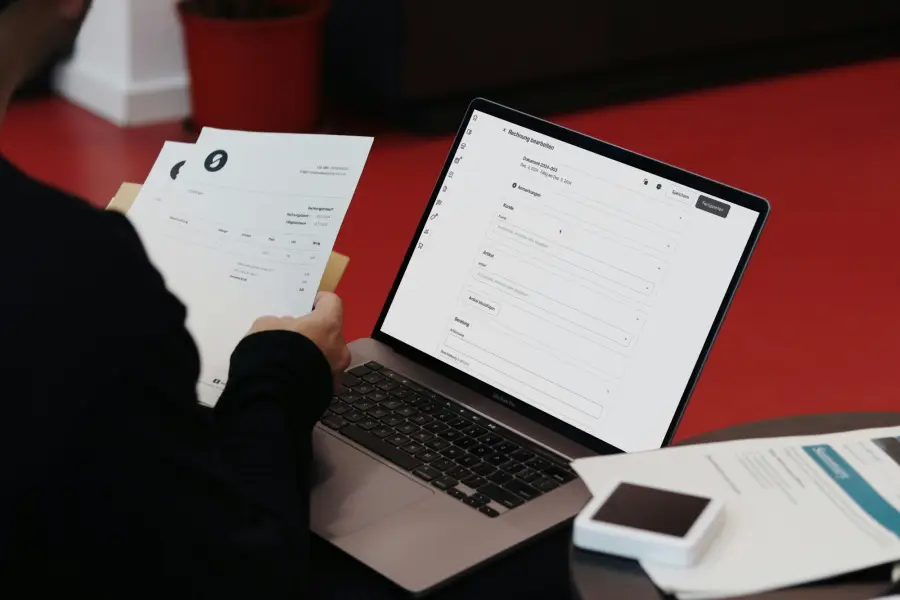

Rental dispute in Dubai? Get a clear plan within 24 hours.
We represent tenants and landlords at the Rental Dispute Settlement Centre, from eviction notices and unpaid rent to deposit claims. In Arabic and English.
- Free 15-minute case review
- Fixed-fee quote before you commit
- Licensed legal consultants in Dubai
- 1,200+rental cases handled
- 4.9 on Google
- Arabic & English
- Fixed-fee pricing
Which situation are you in?
You received an eviction notice
We check whether the notice is valid before you agree to move out.
Your tenant stopped paying rent
We file the claim and pursue payment and, if needed, eviction.
Your deposit was not returned
We recover your security deposit and any deductions made without proof.
Your rent was raised unfairly
We check the increase against the official rental index and challenge it if it is too high.
How it works
-
Free case review
Send us your contract and any notices. Within 24 hours we tell you where you stand.
-

Fixed-fee quote
One price for the whole case. No hourly billing, no surprises.
-
We represent you
We prepare your file, submit it and attend every hearing on your behalf.
What clients say
Our landlord's eviction notice turned out to be invalid. They spotted it in the first call.
Six months of unpaid rent recovered in under ten weeks.
Clear advice, a fixed price and no runaround.
Questions we hear often
How much does a rental dispute case cost?
We give you a fixed fee after the free review. The official filing fee comes on top, and we explain it upfront.
How long does a case take?
Most of our cases close within two to three months.
Do I need to attend the hearings?
No. With a power of attorney, we attend on your behalf.
Do you work with both tenants and landlords?
Yes, but never for both sides of the same dispute.
Get your free case review
Answer four short questions. We reply within 24 hours on WhatsApp.